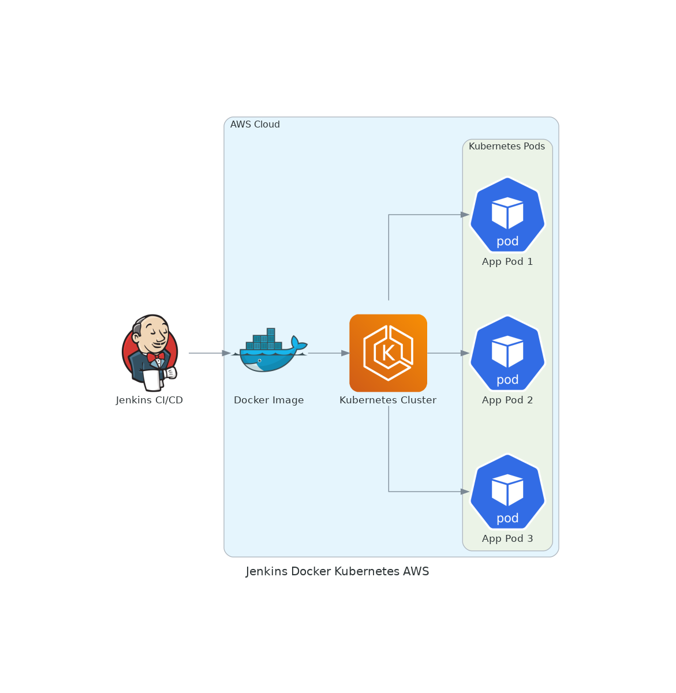
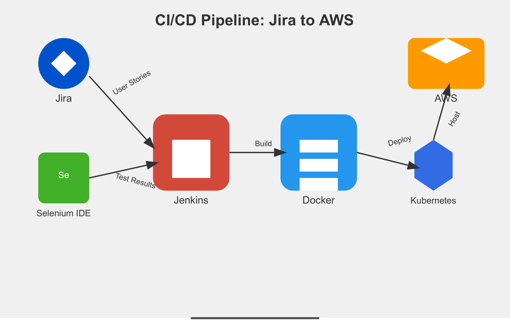

In this project, we are tasked with conducting User Acceptance Testing (UAT) for an application that is managed and deployed through a series of automated processes. The key tools and technologies used in this workflow include Jira, Jenkins, Selenium IDE, Docker, Kubernetes, and AWS.
Jira is used as the central platform for managing the project, where all the test plans, user stories, and test cases are documented. Specifically, we have 42 test cases listed in Jira, which need to be executed as part of the User Acceptance Testing by the deadline. Jira acts as the source of truth for tracking the status of each test case, whether it’s “To Do,” “In Progress,” or “Completed.”
